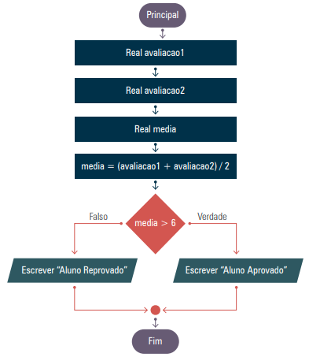

Considere o seguinte código, onde a execução é linear:
1 double avaliacao1, avaliacao2, media;
2 avaliacao1 = 10;
3 avaliacao2 = 5;
4 media = (avaliacao1 + avaliacao2) / 2;
5 Console.WriteLine("A média do aluno é {0}", media);
A execução deste código ocorre da seguinte forma:
avaliacao1.avaliacao2.media.
Entretanto, se quisermos que o programa tome decisões – como indicar se o aluno está aprovado ou reprovado – precisamos que o fluxo seja alterado com uma estrutura condicional.
Na Figura 1, o fluxograma ilustra como o programa desvia do fluxo linear. O losango indica a condição que deve ser avaliada (por exemplo, se a média for maior que 6). Se a condição for atendida, o fluxo segue para o bloco que exibe "Aluno Aprovado"; se não, segue para o bloco que exibe "Aluno Reprovado". Essa representação gráfica exemplifica como decisões podem direcionar o programa para caminhos distintos.
Estruturas condicionais são comandos que avaliam expressões e, com base no resultado (true ou false), direcionam o fluxo para diferentes blocos de código.
A instrução if avalia a condição entre parênteses. Se essa condição for verdadeira, o bloco de
código dentro das chaves é executado; se falsa, o bloco é ignorado.
1 int saldo;
2 saldo = 100;
3
4 if(saldo > 0){
5 Console.WriteLine("Seu saldo é positivo");
6 }
Fluxo:
if é executado.
A estrutura if/else permite definir uma ação alternativa caso a condição inicial seja falsa.
1 int saldo;
2 saldo = -100;
3
4 if(saldo > 0){
5 Console.WriteLine("Seu saldo é positivo");
6 }
7 else{
8 Console.WriteLine("Seu saldo é negativo");
9 }
Fluxo:
else e exibe "Seu saldo é negativo".Quando há mais de duas possibilidades, utiliza-se a estrutura if/else if/else para testar múltiplas
condições. Se a primeira condição for falsa, o programa verifica a seguinte; se todas forem falsas, o bloco
else é executado.
1 int saldo;
2 saldo = -100;
3
4 if(saldo > 0){
5 Console.WriteLine("Seu saldo é positivo");
6 }
7 else if(saldo < 0){
8 Console.WriteLine("Seu saldo é negativo");
9 }
10 else{
11 Console.WriteLine("Seu saldo está zerado");
12 }
Fluxo:
else (linhas 10-12) seria executado, exibindo "Seu saldo
está zerado".As decisões em um programa dependem da avaliação de expressões. Estas expressões podem ser:
>,
<, >=, <=, == e !=, e retornam
true ou false.
&& (E), || (OU) e
! (negação) para construir condições mais complexas.
Exemplo de verificação de ano bissexto:
resultado = (ano % 4 == 0) && (ano % 100 > 0) || (ano % 400 == 0);
Essa expressão retorna true se o ano for bissexto e false caso contrário.
Quadro 1 – Operadores de comparação e lógicos:
| Operador de Comparação | Operador Lógico |
|---|---|
| > (maior) | && (E) |
| < (menor) | || (OU) |
| >= (maior ou igual) | ! (negação) |
| <= (menor ou igual) | |
| == (igual) | |
| != (diferente) |
Explicação do Quadro 1:
Esta tabela apresenta os principais operadores de comparação e os operadores lógicos usados para compor
expressões condicionais. Os operadores de comparação, como >, <,
>=, <=, == e !=, determinam relações entre valores,
enquanto os operadores lógicos, como && (E), || (OU) e !
(negação), permitem combinar múltiplas condições para formar expressões mais complexas. Note que o operador
&& retorna true somente se ambas as condições forem verdadeiras, e o operador
|| retorna true se pelo menos uma condição for verdadeira.
Quadro 2 – Exemplo de expressões relacionais e lógicas:
| Expressão Relacional ou de Comparação | Expressão Lógica |
|---|---|
| a < b (true) | (a < b) && (d > c) (true) |
| d > c (true) | (a < b) || (d == c) (false) |
| a != d (true) | (a == b) || (a < d) (false) |
| d < a (false) | (a > d) || (c > d) || (a < 99) (true) |
| c <= a (false) | (a > d) && (c > d) || (a < 99) (true) |
| c == d (false) | (a < c) && (d == a) && (a == 4) (false) |
Explicação do Quadro 2:
Esta tabela exemplifica como expressões relacionais e lógicas podem ser combinadas. Cada linha demonstra um
exemplo prático: à esquerda, uma expressão relacional que compara valores; à direita, a combinação dessa
expressão com outras, usando operadores lógicos, que resulta em um valor booleano (true ou
false). Esses exemplos ajudam a visualizar como pequenas operações se agrupam para formar condições
que determinam o fluxo do programa.
Novamente, lembre-se que: o operador && (E) exige que todas as condições sejam verdadeiras
para retornar true, e o operador || (OU) retorna true se pelo
menos uma condição for verdadeira.
É importante que todos os códigos sejam inseridos dentro do método
public static void Main(string[] args) de uma classe, pois esse método é a porta de entrada do
programa em C#.
Experimente criar um código que:
Veja o seguinte vídeo e acompanhe no seu computador para melhor entendimento: link
Este capítulo demonstrou a importância das expressões relacionais e lógicas na tomada de decisões e no controle de fluxo dos programas. Vimos como as estruturas condicionais (if, if/else e if/else if/else) são utilizadas para desviar o fluxo de execução com base em condições avaliadas.
A prática desses conceitos, juntamente com a observação dos fluxogramas (com as figuras a serem inseridas nos locais indicados), é essencial para o domínio das técnicas de programação em C#.
{% include nav-aula.html materia="algoritmoseprogramacao1" aula="7" %} {% include footer.html %}